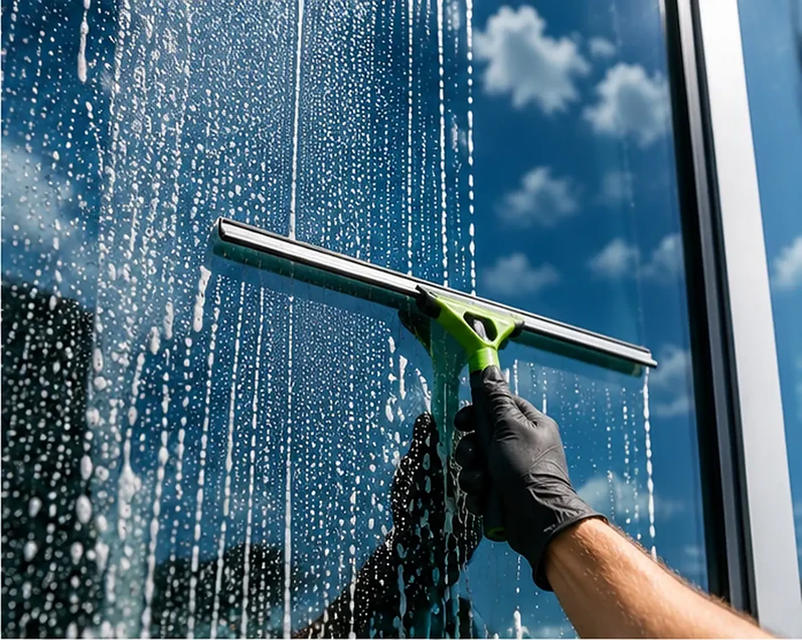
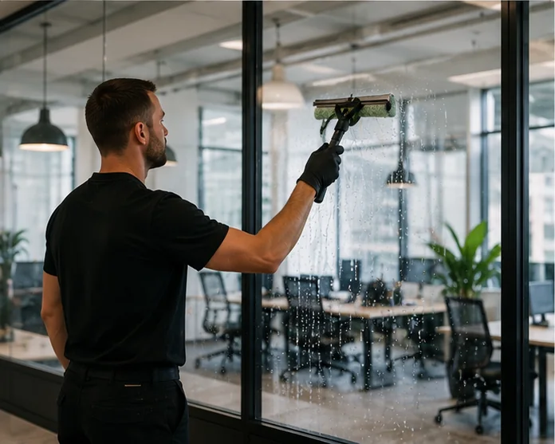
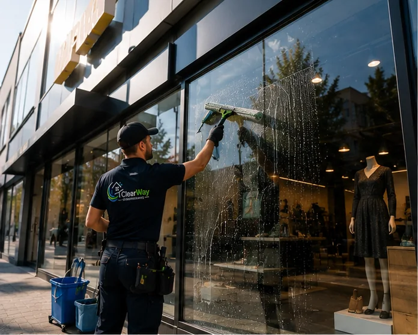
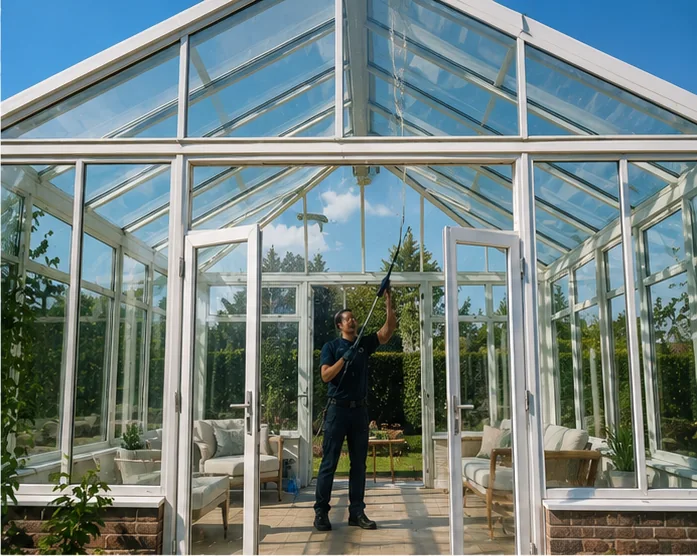
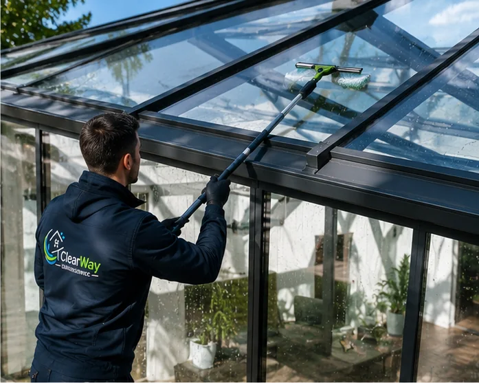
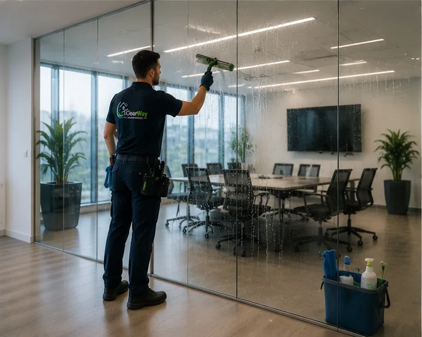
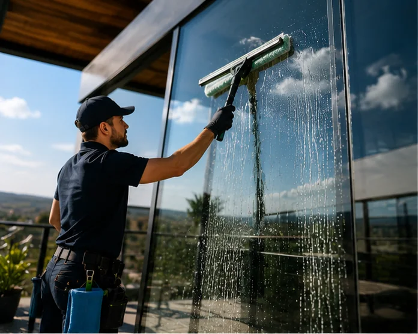
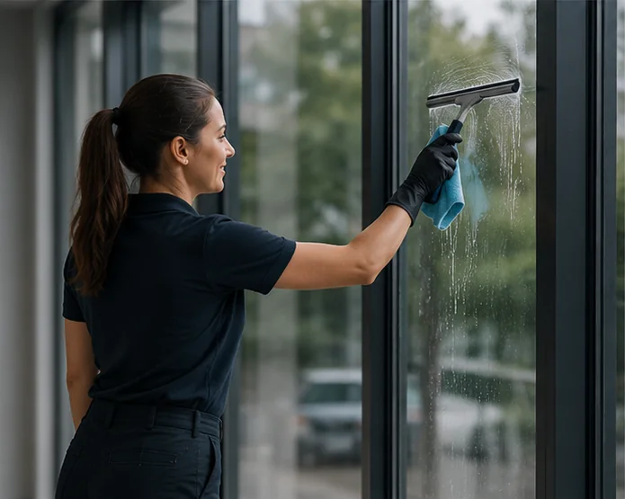
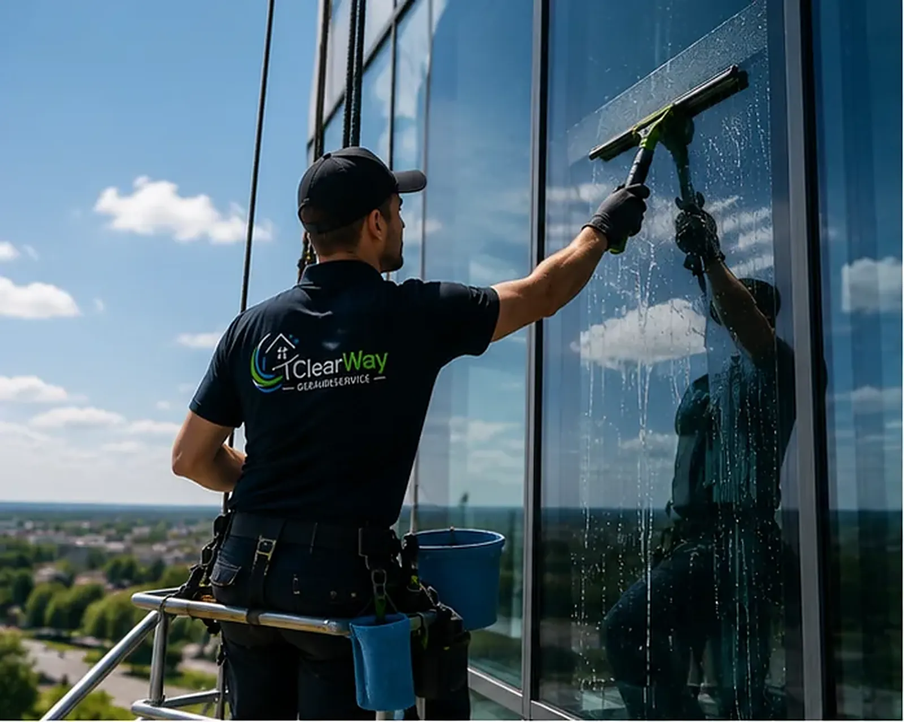

Fenster- & Glasreinigung
Glas ist erst sauber, wenn man es nicht mehr sieht.
Wir reinigen Fenster, Schaufenster und Glasfassaden in Ludwigsburg und Umgebung – streifenfrei, inklusive Rahmen und Falz, und auch dort, wo man ohne Technik nicht hinkommt.
Warum professionell?
Selbst geputzt sieht man es – professionell nicht.
Kalkränder nach dem Regen, Schlieren im Gegenlicht, Staub im Falz: Glas verzeiht wenig. Mit Haushaltsmitteln bleibt oft genau der Film zurück, der bei tiefstehender Sonne sichtbar wird.
Wir arbeiten mit entmineralisiertem Wasser, Einwascher und Abzieher – die Scheibe trocknet ohne Rückstände ab. Rahmen, Falze und Fensterbänke wischen wir standardmäßig mit, denn ein sauberes Fenster hört nicht an der Glaskante auf.
- Fenster innen und außen, inklusive Rahmen und Falz
- Schaufenster und Eingangsverglasungen im Sichtbereich Ihrer Kunden
- Glasfassaden, Wintergärten, Glasdächer und Glasgeländer
- Einmalig, im festen Turnus oder vor besonderen Anlässen

Einsatzbereiche
Vom Wohnzimmerfenster bis zur Glasfassade.
Glas ist nicht gleich Glas: Ein Schaufenster braucht andere Intervalle als ein Wintergarten, eine Fassade andere Technik als ein Bad-Fenster. Wir bringen beides mit.







Höhenzugang
Auch dort, wo die Leiter aufhört.
Obergeschosse, Glasfassaden und Lichtbänder erreichen wir mit Teleskopstangen bis zu mehreren Etagen Höhe – vom Boden aus, ohne Gerüst. Wo das nicht reicht, kommen Hubarbeitsbühne oder Seilzugangstechnik zum Einsatz.
Welche Technik wirtschaftlich sinnvoll ist, klären wir bei der Besichtigung. Oft ist der Aufwand kleiner, als Eigentümer erwarten – gerade mit Osmosewasser und Stangentechnik.
- Teleskopstangen mit entmineralisiertem Wasser
- Hubarbeitsbühnen für Fassaden und Glasdächer
- Abgestimmte Termine, damit Ihr Betrieb weiterläuft
Vorher / Nachher
Der Moment, in dem Glas wieder Glas ist.
Typische Anlässe
Wann Kunden uns rufen.
Der häufigste Fall ist trotzdem ein anderer: Es hat sich einfach niemand mehr getraut, die oberen Fenster selbst zu putzen. Genau dafür sind wir da – mit Technik statt wackliger Leiter.
Gut zu wissen
Warum Wasser nicht gleich Wasser ist.
Leitungswasser enthält Kalk und Mineralien. Trocknet es auf der Scheibe, bleiben genau die weißen Ränder zurück, die man vom Putzen zu Hause kennt. Für die Stangentechnik arbeiten wir deshalb mit entmineralisiertem Wasser: Es bindet Schmutz zuverlässig und trocknet vollständig rückstandsfrei ab – ganz ohne Nachpolieren und ohne Chemie auf der Fassade.
Beim klassischen Handverfahren mit Einwascher und Abzieher kommt es dagegen auf die Technik an: in Bahnen arbeiten, den Abzieher trocken halten, Kanten mit dem Tuch nachziehen. Klingt banal – macht aber den Unterschied zwischen „geputzt“ und „professionell gereinigt“.
Ein paar Anhaltspunkte für sinnvolle Reinigungsintervalle aus unserer Erfahrung:
- Schaufenster in Stadtlage: alle 2–4 Wochen, denn sie sind Ihre Werbefläche
- Bürogebäude: 2–4 Termine pro Jahr, Glastrennwände innen öfter
- Wohnhäuser: 2–3 Termine pro Jahr, nach Pollenflug und Herbstregen
- Wintergärten & Glasdächer: mindestens 2× jährlich, da sich hier Beläge besonders schnell festsetzen
Ihr Objekt tickt anders? Dann passen wir das Intervall an – Verträge mit starren Laufzeiten brauchen Sie bei uns nicht.
Häufige Fragen
Fragen zur Fenster- und Glasreinigung.
Wie oft sollten Fenster gereinigt werden?
Das hängt von Lage und Nutzung ab. Schaufenster an befahrenen Straßen werden oft monatlich gereinigt, Bürogebäude quartalsweise, Wohnhäuser zwei- bis viermal im Jahr. Wir empfehlen ein Intervall, das zu Ihrem Objekt passt – ohne Sie in einen starren Vertrag zu drängen.
Werden Rahmen und Fensterbänke mitgereinigt?
Ja. Rahmen, Falze und Fensterbänke gehören bei uns zum Standardumfang. Auf Wunsch reinigen wir zusätzlich Rollladenkästen, Jalousien oder Insektenschutzgitter.
Wie erreichen Sie hohe oder schwer zugängliche Fenster?
Mit Teleskopstangen und entmineralisiertem Wasser arbeiten wir vom Boden aus bis in mehrere Etagen Höhe. Für Glasfassaden und Sonderfälle setzen wir Hubarbeitsbühnen ein. Was bei Ihrem Objekt nötig ist, klären wir vor dem Angebot.
Kann die Reinigung während der Geschäftszeiten stattfinden?
Ja – oder gezielt davor bzw. danach. Gerade bei Läden und Büros legen wir die Termine so, dass Kunden und Mitarbeitende nicht gestört werden.
Passt dazu
Diese Leistungen kombinieren Kunden oft mit der Glasreinigung.
Klare Sicht gefällig?
Nennen Sie uns Anzahl und Art Ihrer Glasflächen – Sie bekommen zeitnah ein klares Angebot für die Fensterreinigung.